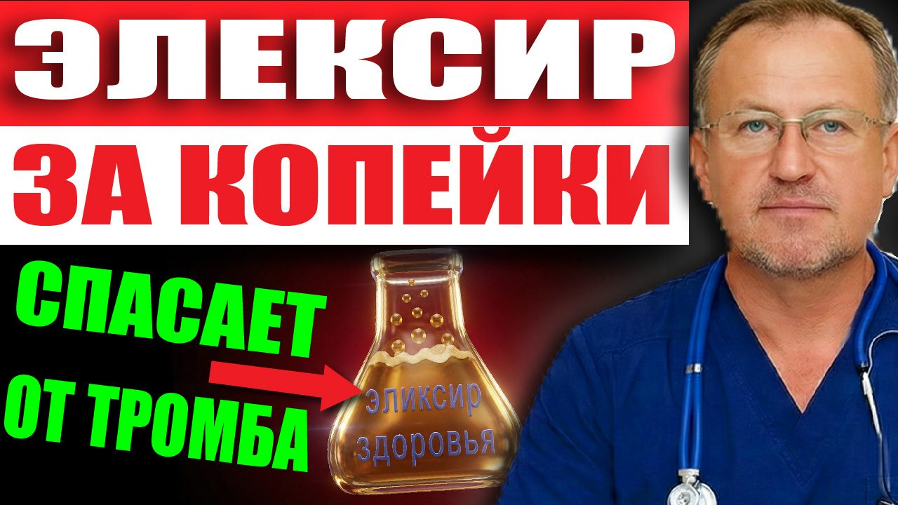
Материалы к выпуску
Кровь станет жидкой, как в 20 лет! Пейте этот ЭЛИКСИР каждый вечер! Рецепт доктора Вавилова.
Раньше этот выпуск выходил под названием «Открытие Гарвардских ученых: как омолодить кровь на 20 лет с помощью 1 стакана по утрам?»
Здесь протокол из этого выпуска. Скачайте и распечатайте — так проще не забывать о главном каждый день.
КРОВЬ КАК В 20
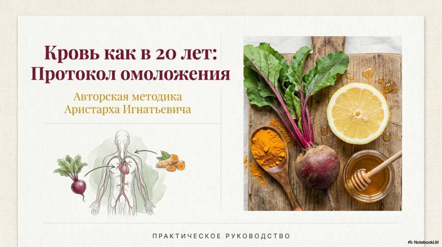
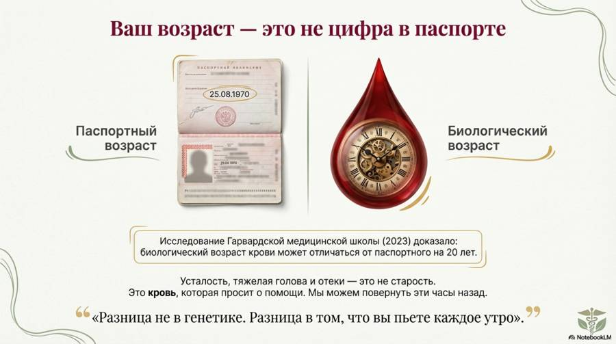
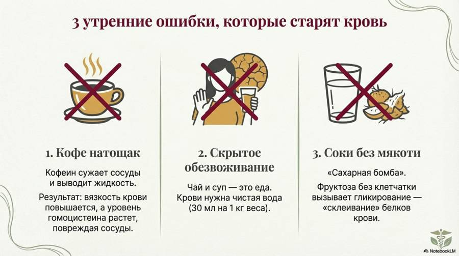
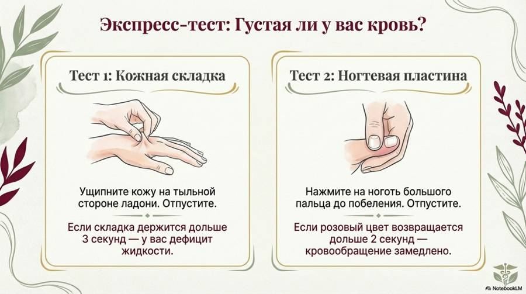
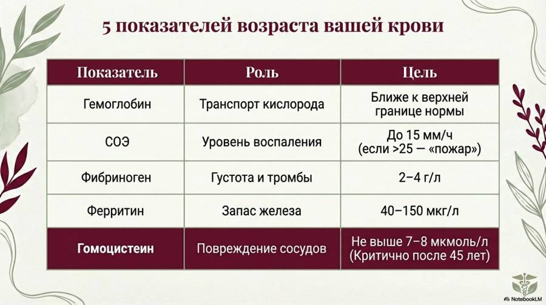
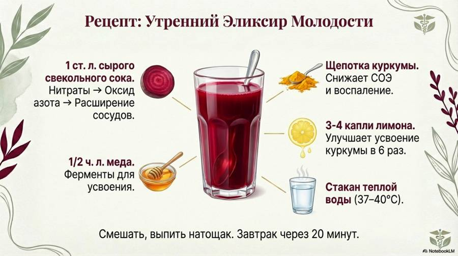
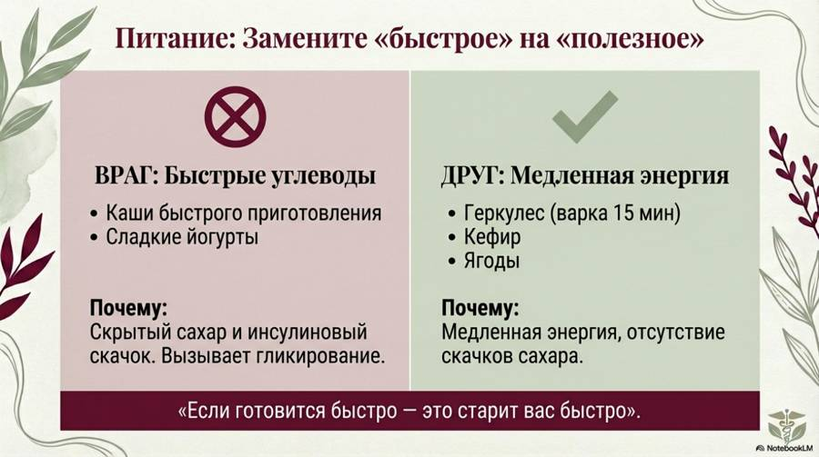
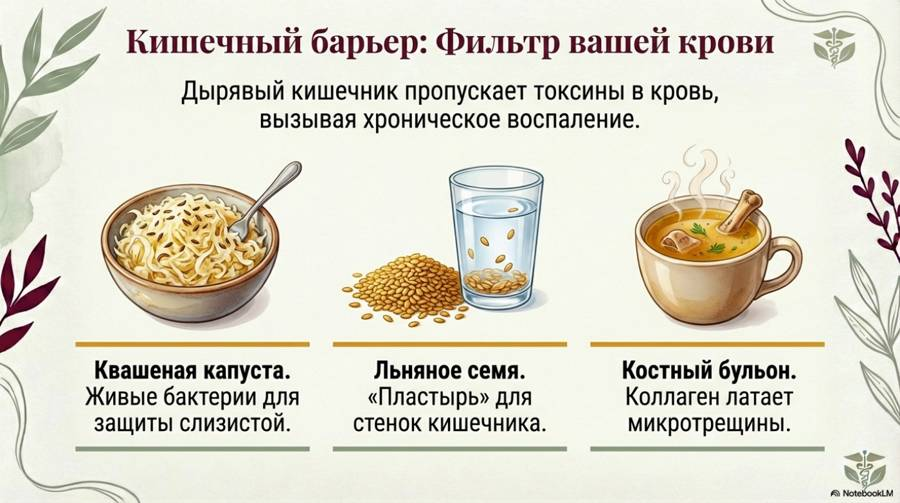
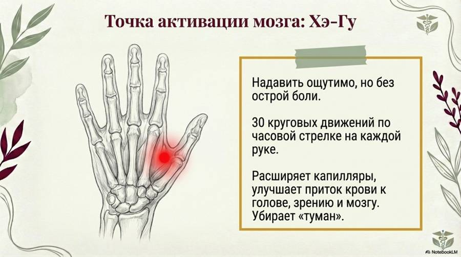
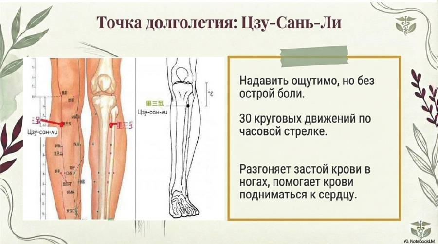
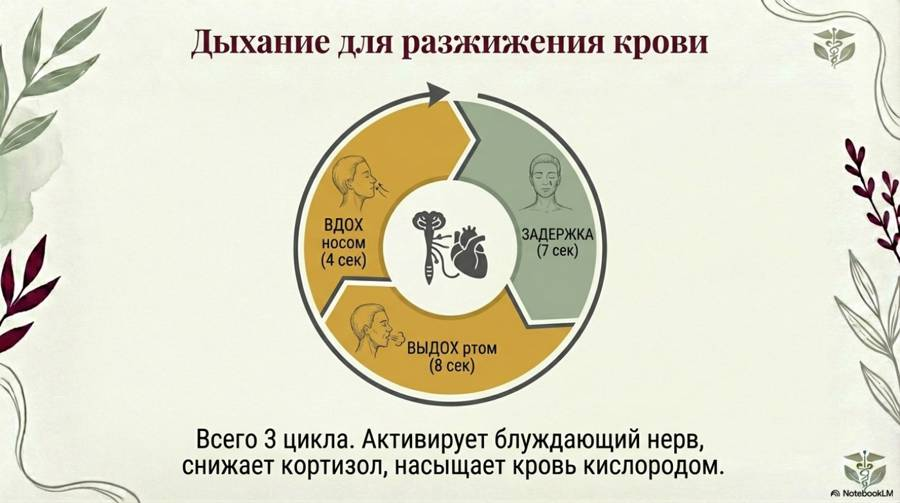
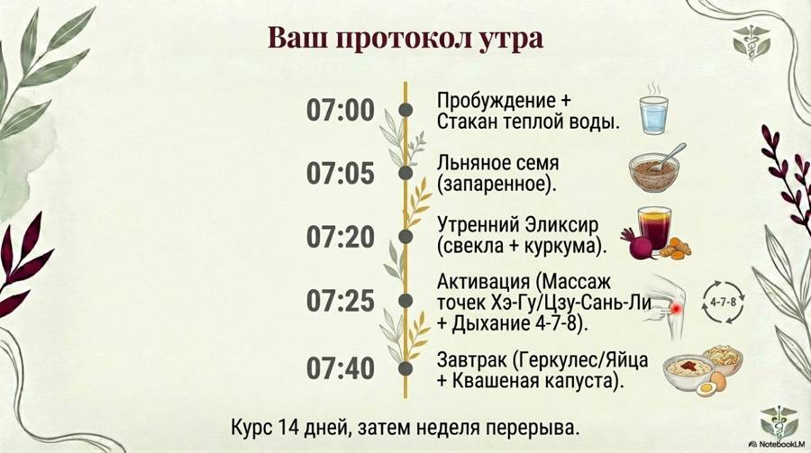
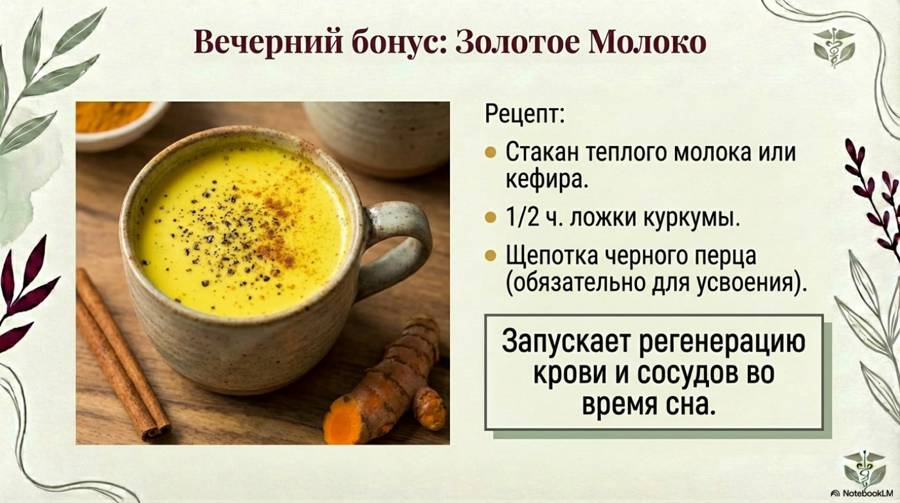
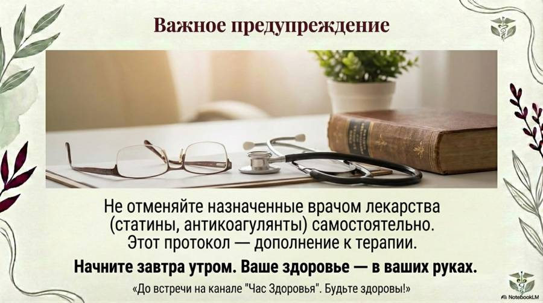
Новые выпуски и карточки — первыми в нашем Telegram-канале.
Открыть Telegram